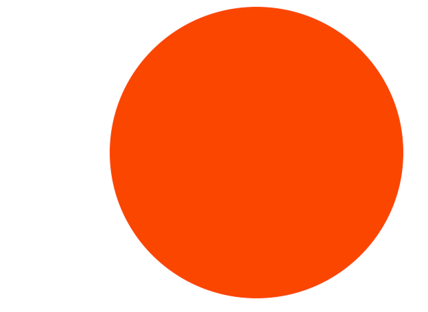
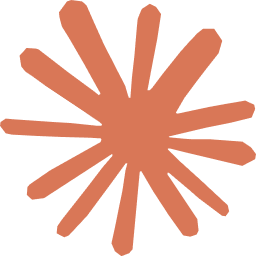
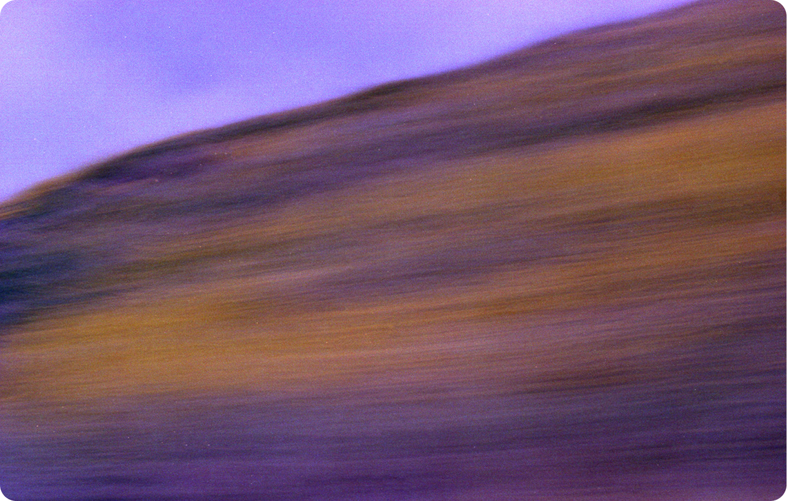
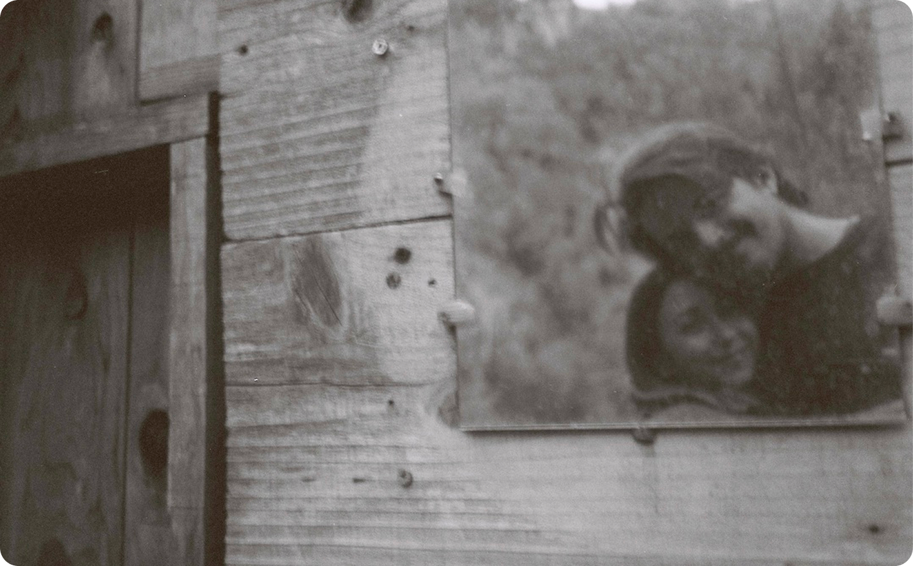

About
Summary
Based in Truckee, California, at the edge of the Sierra Nevada, I design for complex environments and live in simple ones. Outside of work, I’m usually on the Truckee River, in the mountains, or finding new places and experiences to share with my dog. I often carry a camera, using it the same way I approach design: to pay attention, notice patterns, and understand what gives a place or moment its character. The instinct to understand a system deeply before touching it follows me in nearly everything I do.
Experience
- Oracle 2022–2026
- Oracle Senior UX Designer 2025–2026
- Oracle UX Designer 2022–2025
- Payactiv UX Designer 2021–2022
Education
-

ArtCenter College of Design BFA, Graphic Design 2017–2020
Philosophy of Work
I believe design is the mediator between complex problems and a user's end goal. Beauty matters most here, not as decoration, but as the thing that builds trust and makes the next step obvious.
Currently Using

Claude VS Code Pencil.dev Google Stitch

